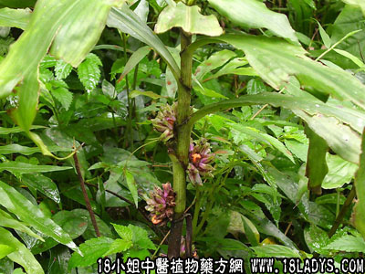

植物名：福氏鞘花。
生长环境：本品为寄生大树上的小灌木。寄生在杂树上，无一定寄生。
分布：我国南部地区山地，广东中部和北部树林中。
入药部分：全株。
采集期：夏、秋。
自采地点：山上、寄生于杉树。
性味：性平、味甘淡。
功能：花气、止咳、散瘀。
主治、用量和用法：1、胃气痛：干用1~2两，猪瘦肉适量，清水适量；2、疝气：用法同上；3、苦伤：用法同上；4、内伤咳血：用法同上。
（方歌）杉树寄生功用多，苦伤咳血疝气瘥，更主心胃气疼痛，瘦肉同煎勿蹉跎。
附录：1、（杉花）功效与杉寄生相同，用量为20朵左右，加猪瘦肉适量，清水煎服。
2、（杉皮）烧灰和油可搽火伤。
3、（杉节）浸酒能祛风。